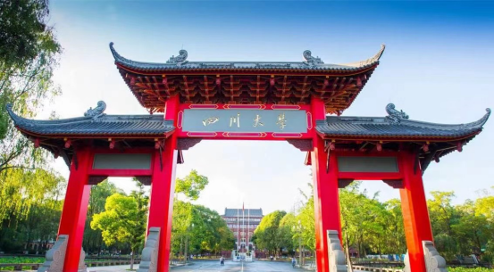

学院通知 · 科研创新
四川大学物理学院诚招全球英才
发布时间：2024-07-23
一、学校简介 四川大学是教育部直属全国重点大学，是国家布局在中国西部的重点建设的高水平研究型综合大学，是国家“双一流”建设高校（A类）。四川大学地处中国历史文化名城——“天府之国”的成都，现有望江、华西和江安三个校区，占地面积7050亩。学校正与眉山市合作共建四川大学眉山校区。四川大学学科门类齐全，覆盖了文、理、工、医、经、管、法、史、哲、农、教、艺等12个门类，有37个学科型学院（系）及海外教育学院等学院。我校为学位授权自主审核单位，现有博士学位授权一级学科53个，博士交叉学位授权点2个，硕士专业学位授权点37个，博士专业学位授权点11个，博士后流动站48个。学校科研实力雄厚，拥有国家重大科技基础设施、全国重点实验室、国家工程技术研究中心等国家级科研基地23个。 四川大学坚持人才是第一资源，深入实施人才强校战略，不断加大高端人才引育，通过实施“双百人才工程”、“科技领军人才培育项目”、“双高人才计划”，举办全球青年学者论坛等，汇聚天下英才。 二、学院简介 物理学院是四川大学规模最大和办学历史最悠久的学院之一。物理学科建立于1926年，距今已有98年的学科历史，先后孕育、发展出了四川大学的无线电电子学、光电技术等学科以及材料科学系等，为学校的发展做出了重大贡献，也为国家培养了大量杰出人才，其中包括7位院士。四川大学核科学学科和微电子学科均创立于上世纪五十年代，是全国最早开设这些学科的少数高校之一。 物理学院现设有三个系（物理学系、核工程与核技术系、微电子学系）、两个研究所（原子核科学技术研究所和原子与分子物理研究所）和两个教学中心（基础物理教学中心和基础物理实验教学中心）。现有教职工250余人，包括正高级职称79人，副高级职称86人，博士生导师73人。其中中国工程院院士1人，国家级重大人才项目入选者5人，国家级重大人才青年项目入选者6人，国务院学科评议组成员1人，教育部教学指导委员会委员3人。学院正在构建一支以优秀学科带头人为核心、以中青年学者为骨干的学术梯队和以中青年教师为主体的师资队伍。 物理学院现有物理学、核科学与技术、电子科学与技术3个一级学科博士学位授权点；拥有原子与分子物理、核技术及应用以及凝聚态物理三个国家重点学科及培育学科；拥有辐射物理及技术、高能量密度物理及技术两个教育部重点实验室以及微电子技术、光学、原子分子工程与高压合成三个四川省重点实验室。物理学、核工程与核技术、微电子科学与工程三个专业均入选国家一流本科专业。物理学先后入选国家拔尖计划2.0、国家首批强基计划、国家首批一流本科专业建设点。“量子科学与新型外场下的物理学”及“基于加速器的核科学与技术”于2018年入选四川大学“双一流”建设超前部署学科。 物理学院近5年承担国家重点研发计划、国家自然科学基金重点项目、国家重大专项课题等数十项，先后获得国家及部、省、市级科研奖励近30项。近5年在Science发表论文3篇, 在Nature子刊、 PNAS、 PRL等其他重要期刊发表大量论文。四川大学物理学院已经成为我国物理学、核科学与技术以及微电子学科研与人才培养的重要基地之一。 四川大学物理学院将围绕人才强院战略，以高质量人才队伍建设推动学院高质量发展。诚邀您的加盟，共创物理学院的新高点！ 三、招聘专业 招聘专业包括 物理学、核科学与核技术、微电子学相关专业以及相关前沿交叉学科方向。 四、人才需求及待遇 1、顶尖人才 岗位条件：在服务国家重大战略需求和经济社会发展等方面发挥重大作用、站在学科最前沿、具有赶超和引领国际先进水平的学术大师和战略科学家，包括诺贝尔奖、菲尔兹奖、图灵奖等综合性和学科型国际公认顶级大奖获得者，主要科技发达国家科学院、工程院院士等顶尖人才等。 待遇：讲席教授岗位，具有国际竞争力的薪酬待遇、全周期服务保障，一事一议、一人一策，上不封顶。 2、领军人才 岗位条件：取得国内外同行公认的重要成就，在海内外具有较大影响力，具有带领团队协同攻关能力的领军人才；或长期从事教学一线工作，对教育思想和教学方法有重要创新，教学成果和教育质量突出，在学生培养方面取得重要贡献的领军人才，包括世界一流大学或一流学科教授、副教授，世界著名研究机构或世界著名企业研发部门首席科学家或核心骨干等。 待遇：海纳特聘教授岗位，具有国际竞争力的薪酬待遇、全周期服务保障，一事一议，配置科研助手，协助组建科研团队，提供可立即开展工作所需的科研启动经费。在基本养老保险、医疗、住房、签证、购换汇、配偶工作、子女读书等方面给予保障。 3、国家级海外优秀青年人才 岗位条件：取得具有重要学术影响的标志性研究成果，具有成为该领域学术带头人或杰出人才的发展潜力，包括世界一流大学或一流学科助理教授，世界著名研究机构或世界著名企业研发部门研究骨干或其他海外优秀青年人才等。 待遇：海纳青年学者岗位，具有竞争力的薪酬待遇和科研启动经费，配备博士后等。按相关规定提供基本养老保险、医疗、住房、签证等方面的支持保障，并协助解决配偶工作、子女入学等问题。 4、优秀青年人才 （1）海外青年人才 岗位条件：在所从事研究领域崭露头角，获得较高学术成就，具有较强的创新发展潜力，包括世界一流大学或一流学科博士(后)、世界知名大学博士(后)、发达国家和地区博士(后)、其他海外人才和部分特殊海外人才等。 待遇：特聘序列岗位(含特聘研究员、特聘副研究员)，薪酬待遇按照学校文件执行，按照岗位类别提供相应科研启动经费、住房待遇以及支持保障服务。 （2）博士专项 岗位条件：年龄不超过35岁；具有国内外高水平大学博士学位，有良好的科学研究经历和教育背景，符合岗位要求的资格条件和工作能力。 待遇：特聘副研究员、助理教授或博士后岗位，学校年薪叠加省市资助年收入可达42万元以上。积极支持申报国家自然科学基金、中国博士后科学基金、“博新计划”等。可申请学校周转房；享受子女入托入学、医疗服务等后勤保障政策。 5、双百人才 （1）双百人才工程A计划 岗位条件：年龄一般不超过42周岁(特别优秀者可适当放宽)，取得国内外同行公认的重要成就，在学科建设、人才培养、科学研究、技术创新等方面的学术带头人。 待遇：年薪不低于52万，按照学校文件提供相应科研启动经费、住房待遇以及支持保障服务；可申请四川省、成都市人才计划，入选者最高可获得300万元资助；享受子女入托入学、医疗服务等后勤保障政策。 （2）双百人才工程B计划 岗位条件：年龄一般不超过35周岁(海外引进可适当放宽)，具有卓越的科研攻坚和技术创新潜力，取得突出学术成果的青年杰出人才。 待遇：年薪不低于39万，按照学校文件提供相应科研启动经费、住房待遇以及支持保障服务；可申请四川省、成都市人才计划，入选
